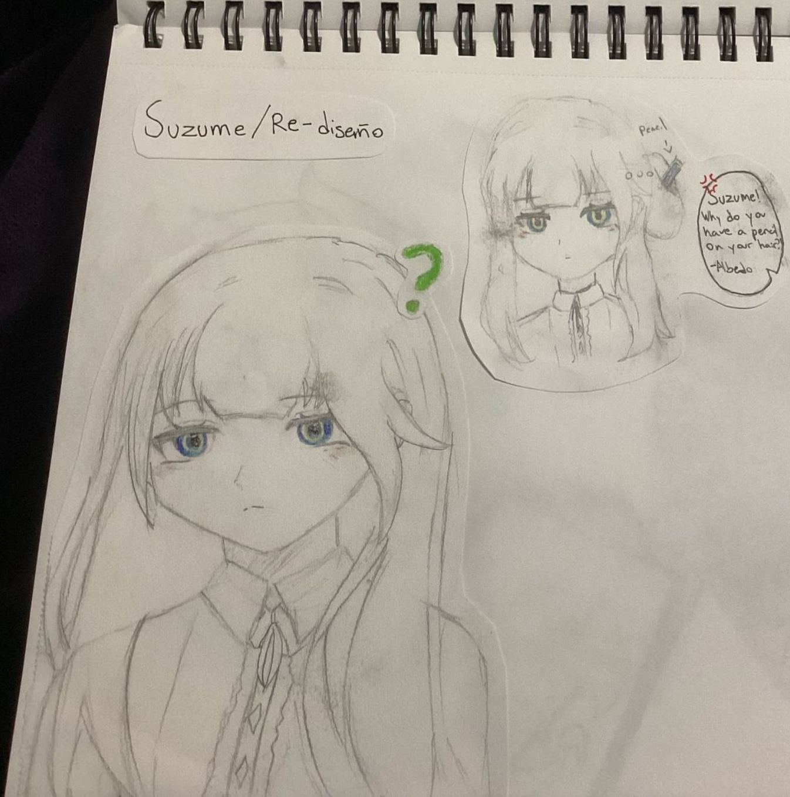
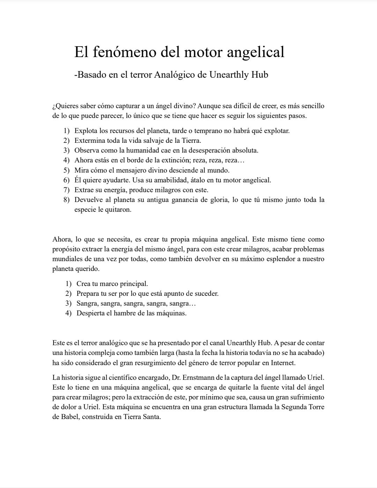
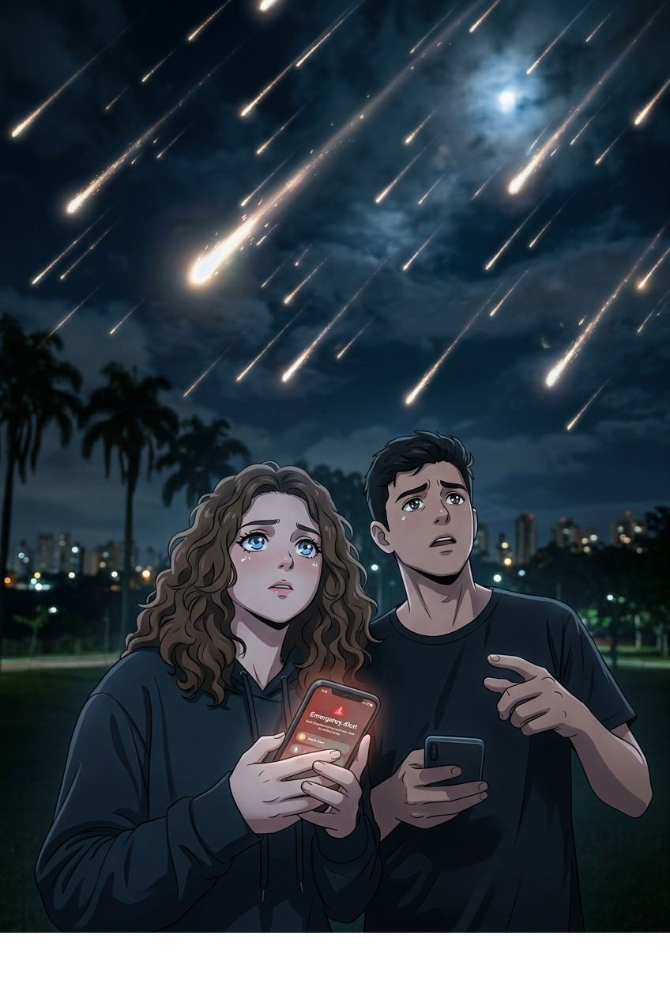

Resumen
Albedo se entera de un monstruo en Dragonspine y decide investigarlo. Encuentra a Suzume inconsciente en la nieve con manos negras. Albedo la lleva al campamento y la salva de la hipotermia. Suzume intenta matar a Albedo, pero él la esquiva y la abraza. Suzume revela que sus manos son una maldición y Albedo le ofrece su apoyo
Datos curiosos
Suzume es el alter-ego de la autora, más abierta y expresiva que ella.
La autora se identifica con Suzume en su terquedad.
El manga se dejó inconcluso por falta de tiempo y habilidades digitales de la autora. 😊
Ver másResumen
El cine es una forma de arte que permite expresar ideas y conceptos de manera variada y emocionante. Con múltiples géneros y formatos, ofrece algo para todos. No solo cuenta historias, sino que también crea emociones y conexiones con los personajes. La cinematografía utiliza elementos como la música, la iluminación, los planos y los colores para transmitir sentimientos y emociones sin necesidad de palabras. Es una forma de arte compleja y costosa, pero vale la pena porque nos permite vivir historias de manera única y emocionante.
Puntos clave
El cine es una forma de arte variada y emocionante
Ofrece múltiples géneros y formatos
Crea emociones y conexiones con los personajes
Utiliza elementos visuales y sonoros para transmitir sentimientos y emociones
Es una forma de arte compleja y costosa, pero vale la pena 😊
Ver más
Resumen
La humanidad destruye el mundo para que un ángel baje a ayudar. Atrapan a Uriel en una máquina en la Segunda Torre de Babel y le drenan la energía para hacer milagros, aunque le causa dolor. Él podría liberarse pero no quiere: espera que lo hagamos nosotros. Hay otro ángel falso, “Nadie”, que corrompe todo. El Dr. Ernstmann crea un ángel artificial, Barachiel, que se vuelve malo y empieza una nueva religión violenta. Es terror analógico sobre el ego humano. Uriel sigue atrapado y la historia ni termina.
Ver más
Resumen
En un futuro cercano amenazado por una lluvia de meteoritos, Alice y sus amigos descubren un mundo subterráneo de dinosaurios donde se revela que su hermano pequeño posee el poder de detener el tiempo. Sin embargo, una profecía advierte que una tribu enemiga se oculta entre los humanos para cazar al niño y absorber su energía bajo la luz de la luna. Justo cuando la verdad sale a la luz, Alice descubre que el traidor está más cerca de lo que imaginaba y que el destino de su hermano pende de un hilo.
Ver más